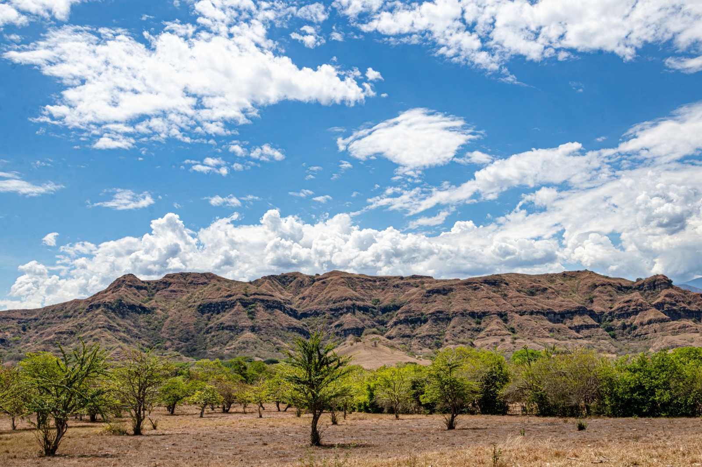

LEYENDA Y PAISAJE
Cerro de la India
Una silueta en la montaña y una historia que forma parte de la tradición oral del territorio.
Entre ríos, montañas y caminos, Patía conserva paisajes que hablan de sus raíces, de su gente y de la memoria de un territorio que merece ser descubierto.
Explorar los destinos
PATÍAUn territorio que se descubre mirando más despacio.
Conocer un destino es también escuchar las historias que viven en sus paisajes. Algunos lugares conservan relatos transmitidos por generaciones; otros invitan a contemplar la naturaleza y compartir junto al río.
Esta galería reúne lugares de interés del Valle del Patía a través de fotografías y relatos. Selecciona cada destino para conocer la historia que lo hace especial.
Comenzar el recorridoSeis lugares, distintas formas de descubrir Patía. Explora las fotografías y entra en cada historia.
Una silueta en la montaña y una historia que forma parte de la tradición oral del territorio.
Un espacio para apreciar el paisaje del río y conocer uno de los lugares señalados en tu recorrido.
Un paisaje relacionado, a través de la tradición oral, con la memoria y las raíces africanas.
Reflejos sobre el agua, montañas verdes y un paisaje que invita a observar el entorno natural.
Un árbol imponente, de ramas extensas y grandes raíces, que sorprende a quienes lo contemplan.
Un lugar de encuentro comunitario en la confluencia de los ríos San Jorge y Huachicono.
Un paisaje se contempla. Una historia se lleva consigo.
RUMBO · PATÍA, CAUCACada camino abre una posibilidad para conocer el territorio, valorar sus paisajes y acercarse a las historias que sus comunidades mantienen vivas.